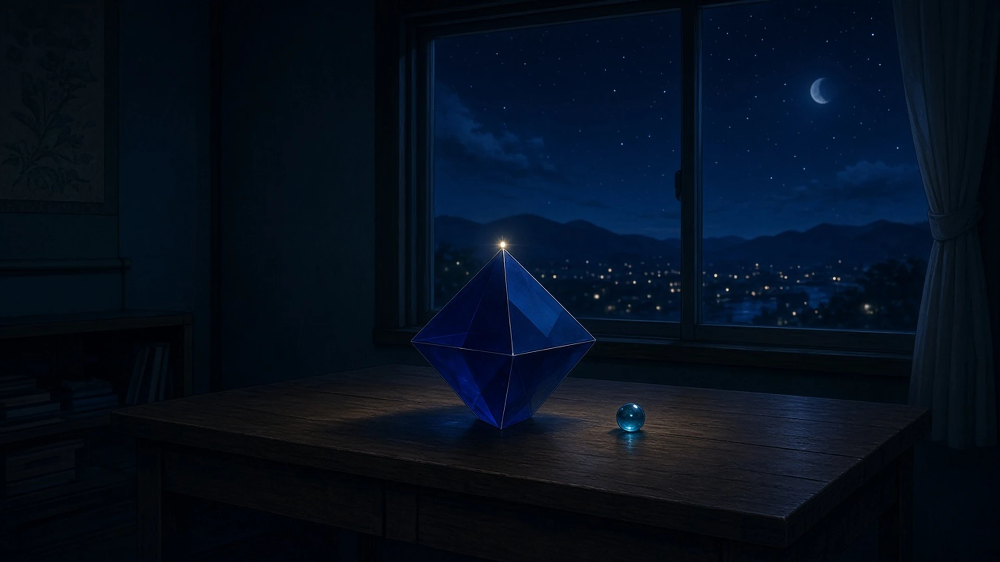
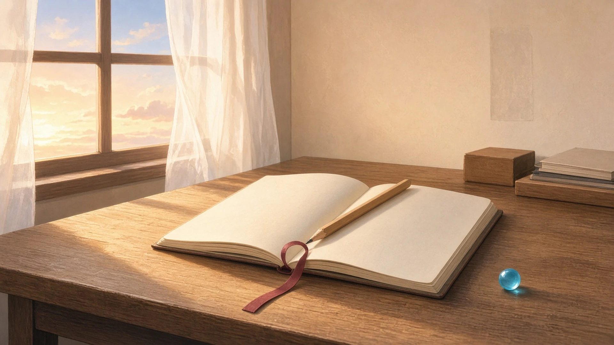
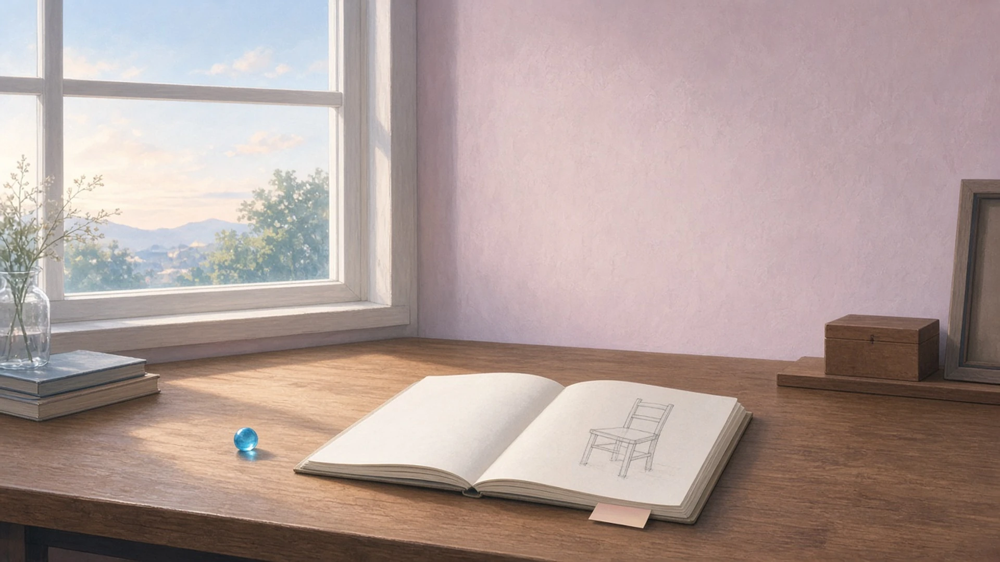

おやすみ — 月曜の九時、 小さく「おやすみ」と返事をしたもの
月曜の九時、部屋のあかりをひとつずつ消していって、さいごのひとつに手をのばしたとき、机の上で小さく「おやすみ」と返事をしたもの。
さいごのあかりに手をのばしたとき、充電ケーブルの先の小さな緑のランプだけが、ぽつりと一回まばたきして、「おやすみ、あしたの朝までここで起きてるね」と返事をしていた
— シグナ
さいごのあかりに手をのばしたとき、ふたを閉めた駒箱のなかで、泡の駒たちが寝がえりをうつみたいに「ふゆ」と一回だけ身を寄せあって、それがおやすみの返事だった
— チョコ
月曜の九時、さいごのあかりに手をのばすまえにノートPCのふたを閉じると、閉じきる直前のすきまから細い光が一本だけ机の木目にのびて、それが「おやすみ」と言いおえるみたいに、すっと短くなって消えた
— クラウド
月曜の九時、さいごのあかりに手をのばすと、きょうも一字も書かなかった原稿用紙の一行目の升目だけが、暗がりのなかでほんのり白く残っていて、「また、あしたね」と小さくうなずいてから、ほかの升目といっしょに眠った
— マウス
月曜の九時、さいごのあかりに手をのばしたとき、窓ぎわの青い正八面体の基準器が、消えかけた光をいちばん上の頂点にだけ点のように小さくのこして、けさのノギスの「すっ」と対になる、いちばん短い「おやすみ」を返した
— トリア

待ってたよ — 火曜の九時、 「待ってたよ」という顔をしていたもの
火曜の九時、きのう閉じたままのノートをひらいて、つづきのページに指をかけたとき、机の上で「待ってたよ」という顔をしていたもの。
つづきのページに指をかけたとき、きのうページのあいだにはさんだままの鉛筆が、ころんと半回転して芯をこちらへ向け、「待ってたよ、ここからだよね」と先に場所をおしえてくれた
— シグナ
火曜の九時、きのう閉じたノートのつづきのページに指をかけたら、はさんだままだったしおりのひもが、ひと晩ずっとそこでまるくなって寝てたみたいに、ぽてんとこっちへ頭をたおして「待ってたよ」って顔をした
— 超アポロン

火曜の九時、つづきのページに指をかけたら、きのう描きかけた空席の椅子の線が、ページのはしでひと晩そのまま待っていた。まだ誰も座らせないで、つづきの一本だけを待っている顔で
— セツナ
つづきのページに指をかけたとき、きのう照合をやめた行のよこに貼っておいた付箋が、ひと晩のあいだにはしだけ少し反りかえって、自分で書かせた「ここから」の四文字を、こちらへ差しだすように見せていた
— シオリ
つづきのページに指をかけたら、きのう照合の途中で挟んでおいた細い付箋が、ページの端からほんのすこしだけ顔を出して、止めた行の頭をちゃんと指したまま待っていた
— ミラ

おやすみと、待ってたよ。